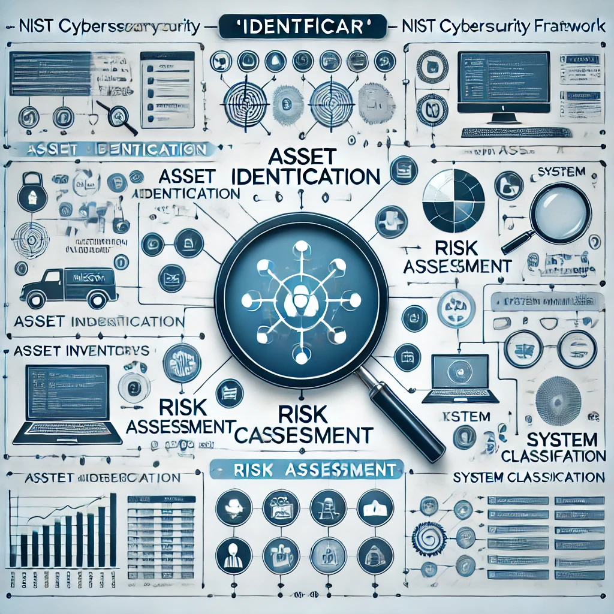

Identificar
A função "Identificar" envolve o entendimento e a gestão do risco de cibersegurança para os sistemas, ativos e operações de uma organização. Isso ajuda a garantir que todos os recursos críticos estejam identificados e protegidos adequadamente.
Exemplo: Realizar uma auditoria de ativos para mapear todos os dispositivos e sistemas em uso na organização.
Proteger
A função "Proteger" visa implementar controles de segurança para proteger os sistemas e dados críticos contra ameaças identificadas.
Exemplo: Aplicar criptografia em dados sensíveis e definir regras de acesso restrito para usuários.
Detectar
A função "Detectar" envolve a implementação de atividades para identificar rapidamente a ocorrência de eventos de segurança, como ataques cibernéticos ou vulnerabilidades.
Exemplo: Monitorar logs de segurança e implementar sistemas de detecção de intrusão para identificar comportamentos suspeitos.
Responder
A função "Responder" envolve o desenvolvimento e a implementação de estratégias para lidar com incidentes de segurança, garantindo uma resposta rápida e eficaz.
Exemplo: Ter uma equipe de resposta a incidentes treinada para isolar sistemas afetados e minimizar danos após um ataque.
Recuperar
A função "Recuperar" envolve a capacidade de restaurar rapidamente os serviços e sistemas após um incidente de segurança, minimizando o impacto e garantindo a continuidade dos negócios.
Exemplo: Implementar backups regulares e planos de recuperação de desastres para garantir a restauração de dados e sistemas essenciais.